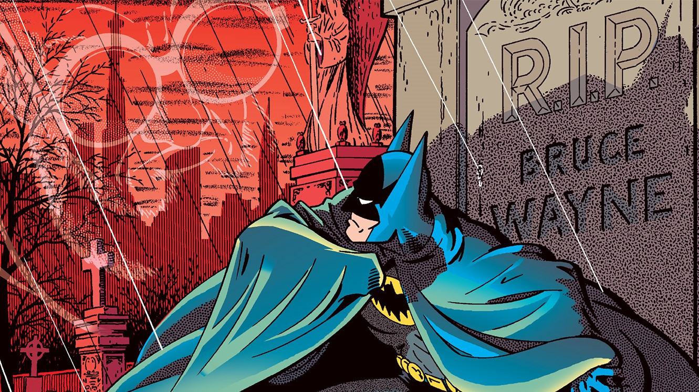

21_2075cProWebT1Ejercicio9CorreaJose
debera recrear el contenido visual de la pagina
Curriculum vitae de Bruce Wayne

- nombre completo: Bruce Wayne
- fecha de nacimiento: 1/5/1939
- lugar de nacimento: Gotham City
formacion academica
- 1956-1961: universidad de espatapajaros
- 1952-1956: instituto de dos caras
- 1944-1952: escuela primaria del joker
experiencia laboral
- 1975-1985: en le paro
- 1965-1975: cazavillanos y demas chusma
- 1962-1965: aprendiz de superheroe
YO SOY BATMAN